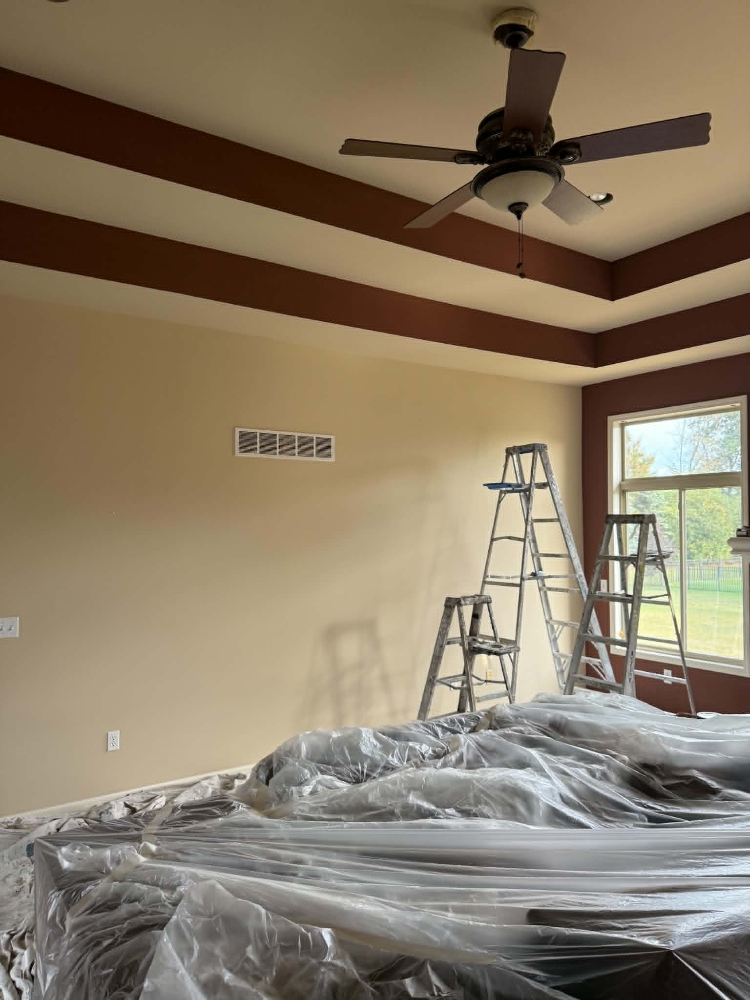

Interior Painting
Walls, trim, and cabinets refreshed for both lakefront cottages and inland West Bloomfield homes.
See our approach to interior paintingInterior, exterior, residential and commercial painting for West Bloomfield Township homes and businesses — from renovated lake cottages on Cass Lake and Pine Lake to custom-built estates set back from the water.

West Bloomfield Township is one of the most lake-dense communities in Oakland County — Cass Lake, Pine Lake, Walnut Lake, and the Upper and Middle Straits all cut through it. That changes what a paint job has to hold up to. Homes near the water deal with more humidity and more reflected sun than inland properties, and older lake cottages converted into year-round homes often carry decades of prior paint layers that need real prep, not a quick recoat.
We treat West Bloomfield exteriors accordingly — moisture-resistant priming and coatings suited to near-water exposure, whether your home sits on Walnut Lake or in an inland subdivision off Orchard Lake Road.
Whether your property is on the water or set back from it, we bring the same prep and finish standard to every West Bloomfield job.
Walls, trim, and cabinets refreshed for both lakefront cottages and inland West Bloomfield homes.
See our approach to interior paintingSiding and trim coated to withstand West Bloomfield's lake-effect humidity and sun exposure.
More on exterior paintingFrom Walnut Lake estates to inland subdivisions near Orchard Lake Road, painted to the same standard.
See our residential painting servicesProfessional painting for offices, retail, medical and commercial spaces in West Bloomfield.
See our commercial painting servicesYes. West Bloomfield Township has more lakefront and near-water properties than most communities we serve — Cass Lake, Pine Lake, Walnut Lake, and the Straits chain among them. Homes near the water deal with more humidity and reflected sun than inland properties, so we use moisture-resistant coatings and extra prep time on caulking and priming to account for it.
Yes. Free estimates are available for West Bloomfield Township homes and businesses. We provide an owner-led walkthrough and a clear written proposal, whether your home is on the water or set back in an inland subdivision.
Yes. We handle interior painting, exterior painting, residential painting, and commercial painting throughout West Bloomfield Township and nearby Metro Detroit communities, including Orchard Lake, Bloomfield Hills, and Birmingham.
Yes. Tim MacDonough Painting Company is fully licensed and insured for all painting work in West Bloomfield Township and surrounding areas.
See why West Bloomfield homeowners trust an owner-operated painter who understands lakefront exposure and estate-level detail.